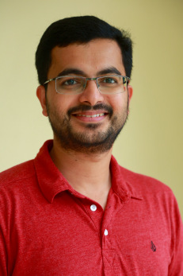

I am teaching CS102 Software Tools this semester.
My education details are given in the below HTML table.
| Year of Graduation | Degree | Institute |
| 2015 | Ph.D. | University of Florida, Gainesville, Florida, USA |
| 2010 | Master of Science | University of Florida, Gainesville, Florida, USA |